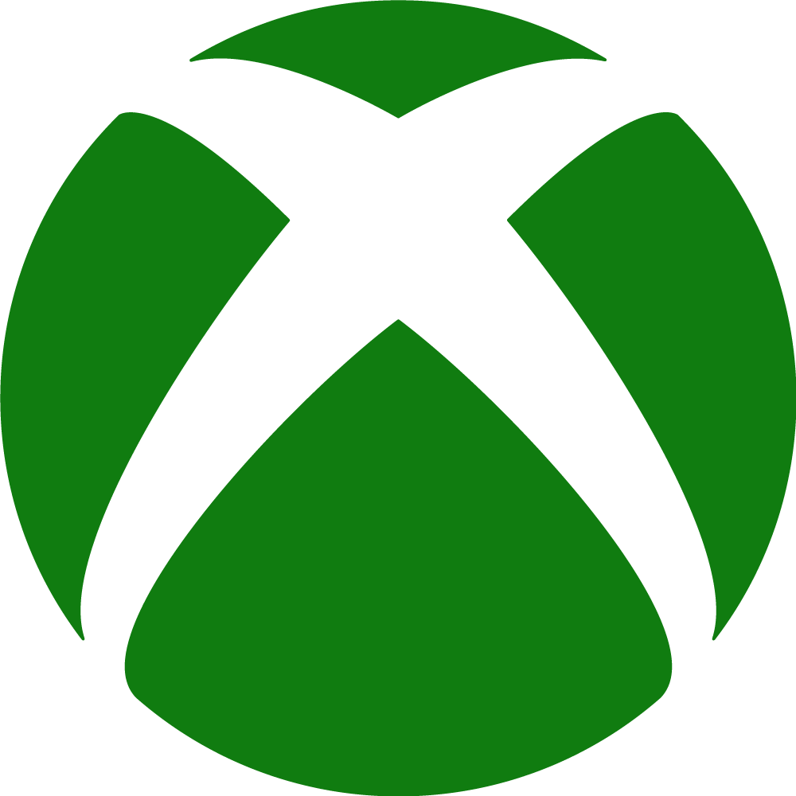
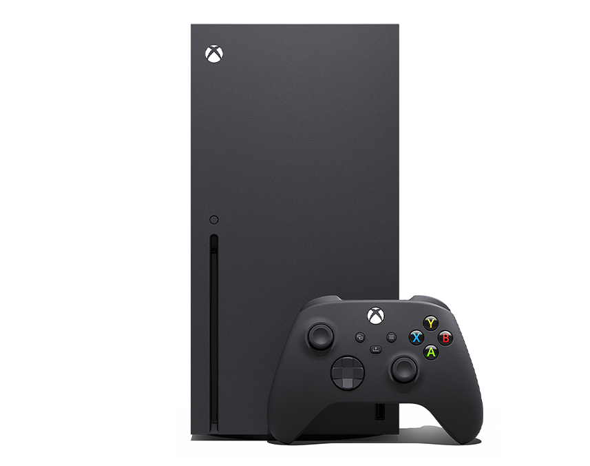
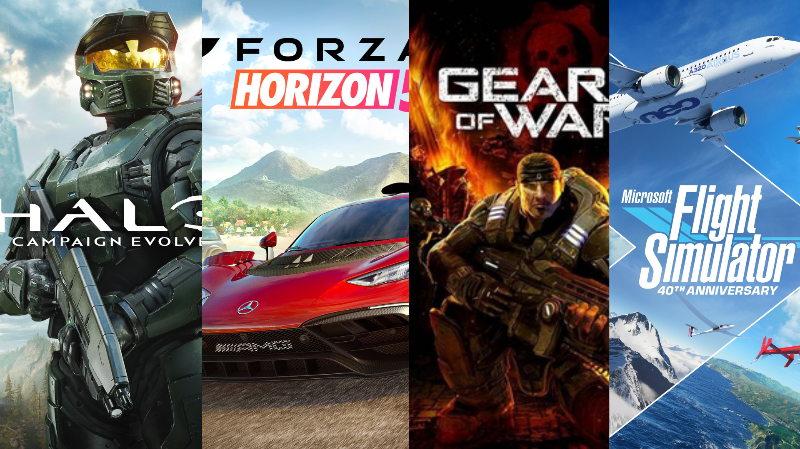

Xbox

Sobre a empresa
Xbox é uma marca de videogames pertencente à Microsoft. Sua história começou em 2001, com o lançamento do primeiro console Xbox. A empresa passou a competir no mercado de videogames com marcas tradicionais, conquistando espaço entre os jogadores.
Ao longo dos anos, a marca lançou diferentes gerações de consoles e investiu em serviços digitais. Entre seus principais produtos estão a plataforma Xbox Game Pass, a Xbox Store e os jogos desenvolvidos por seus estúdios.
Xbox Series X

O Xbox Series X foi lançado em novembro de 2020 e faz parte da nona geração de consoles. Ele foi desenvolvido para oferecer alto desempenho, carregamentos rápidos e gráficos de alta qualidade.
O console possui armazenamento SSD, suporte a resolução de até 4K e compatibilidade com diversos jogos de gerações anteriores. Seu formato vertical e acabamento preto são algumas de suas características visuais.
Jogos conhecidos
Entre as franquias associadas ao Xbox estão Halo, Forza, Gears of War e Microsoft Flight Simulator. Esses jogos ajudam a representar a variedade de experiências disponíveis na plataforma.
